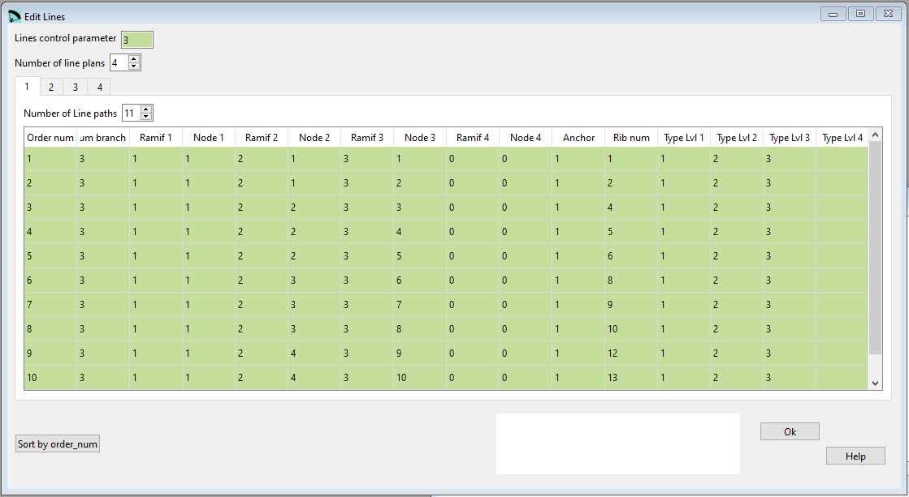

Lines¶
In the Lines window you can define the parameters from the 9th section of the lep file. Here you create the detailed line plan. The brake lines will be defined in a 2nd window.
{kind=link}
Raw data:
***************************************************
* 9. SUSPENSION LINES DESCRIPTION
***************************************************
3
4
11
3 1 1 2 1 3 1 0 0 1 1 - 1 2 3
3 1 1 2 1 3 2 0 0 1 2 - 1 2 3
3 1 1 2 2 3 3 0 0 1 4 - 1 2 3
3 1 1 2 2 3 4 0 0 1 5 - 1 2 3
3 1 1 2 2 3 5 0 0 1 6 - 1 2 3
3 1 1 2 3 3 6 0 0 1 8 - 1 2 3
3 1 1 2 3 3 7 0 0 1 9 - 1 2 3
3 1 1 2 3 3 8 0 0 1 10 - 1 2 3
3 1 1 2 4 3 9 0 0 1 12 - 1 2 3
3 1 1 2 4 3 10 0 0 1 13 - 1 2 3
3 1 1 2 4 3 11 0 0 1 14 - 1 2 3
17
3 1 1 2 1 3 1 0 0 2 1 - 1 2 3
3 1 1 2 1 3 2 0 0 2 2 - 1 2 3
3 1 1 2 2 3 3 0 0 2 4 - 1 2 3
......
Lines control parameter¶
The first parameter Lines control parameter defines how the individual lengts of the lines will be calculated afterwards.
Values allowed are 0..4: * 0 = lower branches lined only by geometric mean of the anchor points
1 = lower branches lined by weighting type 1
2 = lower branches lined by weighting type 2
3 = lower branches lined by weighting type 3 (spanwise and chordwise optimization).
Read more details OPTIMIZE YOUR LINES IN LEPARAGLIDING.
Parameter 3 is what is recommend for all new designs. The distribution of loads on the lines will be much better. Possibly the paraglider will be more solid.
Line plans¶
Imagine you look from the front/ rear of the wing towards the lines.

A line path can go in max across 4 levels. For each path you define the number of the node on which it ends at the end of the level.
To explain how lines are described we look at the first line in the drawing above which is:
4 1 1 2 1 3 1 4 1 (A=1) 1
The first pair 1 1 describes the end of the line which is in level 1 (the most to the bottom) node 1
2 1 the line runs across level 2 and ends in node 1
3 1 the line runs across level 3 and ends in node 1
4 1 the line runs across level 4 and ends in node 1
(A=1) 1 finally we tell lep to connect the node to the anchor A (which is number 1) of the first rib.
Lets have a look at the second line in the drawing:
4 1 1 2 1 3 1 4 2 (A=1) 2
The first pair 1 1 describes the end of the line which is in level 1 node 1.
2 1 the line runs across level 2 and ends in node 1
3 1 the line runs across level 3 and ends in node 1
Until here both paths are identical.
4 2 the line runs across level 4 and ends in node 2 Here the paths split. On level 4 we have a new target node.
(A=1) 2 This new node we connect again to anchor A but now on rib 2.
General rules¶
For each riser you will need to create a line plan.
If you do not want to use a level you have to fill 0 for the definition pair of this level.
The line below shows a path which needs only 3 levels for it’s definition.
3 1 1 2 3 3 17 0 0 3 9
Lines control parameter¶
Standard value is always 0 as this is currently the only valid description for lines.
Number of line plans¶
Will be considered as many plans as risers.
Num branches¶
Defines how many branches (or levels) you have defined on this specific line.
Ramif 1, 2, 3, 4¶
Describes the level for which you define the according node.
Node 1, 2, 3, 4¶
Node number on which a specific path ends on a specific Ramif level.
Line types¶
Since V3.23 the individual line characteristics can be defined. This is done in the Lines characteristics window. The type number defined there can afterwards be assigne to the indiviual line defined here.
If in the window Edit Lines no type assignment will be made, a default assignement in the background will be done:
Lvl 1-> Typ 1
Lvl 2-> Typ 2
…
Sort by Order Num¶
The button Sort by Order Num can be used to rearrange the definition lines. If for whatever reasons you will rearrange the lines, just define the numbering in an ascending order and press the Order button afterwards. Lepg will reorder the lines according to the numbering you’ve choosen.
A more detailed description you can find here Laboratori d'envol website.